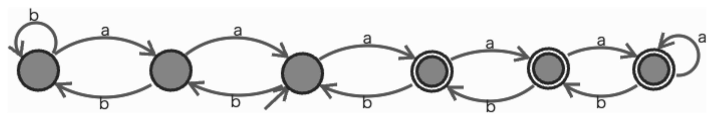
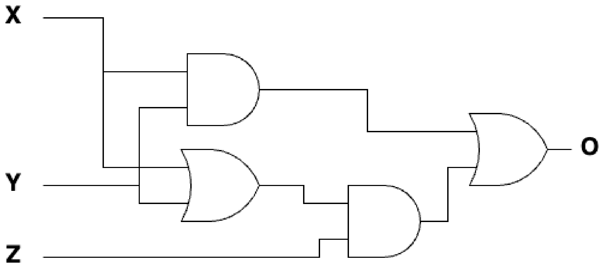

田中哲郎クラス｜7月29日 3限｜大問2
文字集合$\Sigma=\{a,b\}$として、判定問題$L_1$を考える：
A君は問題$L_1$が有限状態機械で解けると主張して、下のチェック表を作成した。表の(a)〜(e)に「受理」または「拒否」のどちらが入るかを答えよ。
| 入力 | 停止時の状態 |
|---|---|
| a | 受理 |
| b | 拒否 |
| ab | 拒否 |
| aba | 受理 |
| ab | 拒否 |
| bbb | 拒否 |
| aaa | 受理 |
| baa | (a) |
| abb | (b) |
| bbaabaa | (c) |
| aaabbab | (d) |
| bbaa | (e) |
aの個数とbの個数を数えて比較するだけでよい。
下図の有限状態機械$M_1$は$L_1$を正しく解いていない。$L_1(x_1)=$真なのに$M_1$が拒否する$x_1$、$L_1(x_2)=$偽なのに$M_1$が受理する$x_2$を、最短のもので答えよ。

この機械は6状態の一直線のチェーンで、状態1（左端）で「b」を読むと自己ループ（それ以上左に進めない）、状態6（右端）で「a」を読むと自己ループする。「a」で右隣へ、「b」で左隣へ移り、状態4・5・6だけが受理状態である。開始状態は状態3（図で外部から矢印が入っている状態）である。
状態3から出発するので、両端の自己ループに触れずに済んでいる間は、状態番号は「$3+(\text{aの個数})-(\text{bの個数})$」に一致し、受理状態（4以上）に届く条件はちょうど「aの個数がbの個数より1つでも多い」——すなわち$L_1$の条件そのものと一致する。ところが状態は1〜6の6個しかないため、差が$-2$を下回る（状態1で自己ループして以降のbが無かったことにされる）か、$+3$を上回る（状態6で自己ループして以降のaが無かったことにされる）と、それ以上の差の情報が失われてしまう。この「端での取りこぼし」こそが、$L_1$と$M_1$のズレの原因である。
$x_1$：入力「aaaabbb」（長さ7）。$L_1(\text{"aaaabbb"})$は a=4,b=3 で 4>3 なので真。しかし$M_1$は開始状態3から「a」を4つ読んで 3→4→5→6→6 と進む（4つ目のaは状態6で自己ループし、無かったことにされる）。続く「b」を3つ読んで 6→5→4→3 と進み、状態3（非受理）で停止する——$M_1$は拒否してしまう。状態6での自己ループを1回でも発生させるには少なくとも4つのaが要り（3つで状態3→6に届き、4つ目が自己ループ分）、そこから非受理領域（状態3以下）に戻るには少なくとも3つのbが要るので、これより短い入力では真に真かつ$M_1$拒否という組み合わせは作れず、7文字が最短である。
$x_2$：入力「bbbaaa」（長さ6）。$L_1$はa=3,b=3で 3>3 は偽なので偽（拒否が正しい）。しかし$M_1$は、開始状態3から最初の2つの「b」で 3→2→1 と進んだあと、3つ目の「b」は状態1で自己ループして無かったことにされる（これ以上左に進めないため）。続く3つの「a」で状態1→2→3→4と進み、状態4（受理）で停止してしまう——受理してしまう。状態1での自己ループを1回でも発生させるには少なくとも3つのbが要り（2つで状態3→1に届き、3つ目が自己ループ分）、そこから受理領域（状態4以上）に届くには状態1から少なくとも3つのaが要るので、これより短い入力では真に偽かつ$M_1$受理という組み合わせは作れず、6文字が最短である。
$L_1$を解く有限状態機械が存在しないことを証明せよ。
背理法で示す。$L_1$を解く有限状態機械$M$が存在し、状態数が$n$個であるとする。文字列$a^0,a^1,\ldots,a^n$（$n+1$個）を$M$の開始状態から読ませたときに到達する状態を考えると、状態は$n$種類しかないので、鳩の巣原理により、ある$0\le i<j\le n$について$a^i$と$a^j$を読んだ後の到達状態が一致する。
有限状態機械の遷移は「現在の状態」だけで決まるので、$a^i$の後にも$a^j$の後にも同じ文字列$b^i$を続けて読ませれば、$M$は$a^ib^i$と$a^jb^i$のどちらについても同じ状態（受理／拒否）で停止するはずである。
しかし真の$L_1$の値は、$L_1(a^ib^i)$は $i>i$ が偽なので偽、$L_1(a^jb^i)$は $i<j$ より $j>i$ が真なので真——両者は異なる。$M$がどちらも同じ答えを返す以上、$M$は少なくとも一方について誤った答えを返すことになり、「$M$が$L_1$を正しく解く」という仮定に矛盾する。よって$L_1$を解く有限状態機械は存在しない。
$L_1$を解く、なるべく状態数の少ないチューリングマシンを示せ。チューリングマシンを記述するのに、教科書の表記あるいは演習で用いたオートマトンシミュレータ以外の記述法を用いる場合は、記述法に関する説明も書くこと。
「1つの未処理のaと1つの未処理のbを見つけて印をつける（消し込む）」ことを繰り返し、bが尽きた時点でaが1つでも残っていれば受理、aが（bより先に、あるいは同時に）尽きたら拒否、という素朴な消し込み法で解ける。印には$X$（消し込んだa）・$Y$（消し込んだb）を使う。
実質3状態（$q_0,q_1,q_2$）＋受理・拒否の停止動作という、非常にコンパクトな構成で$L_1$を解ける。
有限状態機械（正則言語）は「有限個の状態」しか記憶できないため、入力の長さに応じて際限なく大きくなりうる「差の大きさ」（$a$の個数と$b$の個数の差）を正確に記憶できない。(C)の証明はまさにこの限界——鳩の巣原理を使って「十分長い入力では必ず状態が使い回される」ことを突く、正則言語の非正則性を示す標準的な手法（ポンピング補題の考え方と同じ精神）である。 一方チューリングマシンはテープに印をつけられるため、(D)のように「1対1で消し込んでいく」操作を通じて、有限状態機械では原理的に不可能な「際限のない比較」を実現できる——これがチューリングマシンが有限状態機械より真に強力である所以。
下の図はある論理関数$O=f(X,Y,Z)$をMIL記法で書いたものである（AND(X,Y)、OR(X,Y)、AND(OR出力,Z)、最後にOR(AND1,AND2)という4ゲート構成）。

$O=f(X,Y,Z)$の真理値表を書け。
回路式は $O = XY + Z(X+Y)$。分配法則で展開すると $XY+XZ+YZ$となる。各積項はそれぞれ「XとY」「XとZ」「YとZ」がともに1の場合を表すため、3つの入力のうち2つ以上が1のとき1を出力する多数決関数である。したがって1が0個・1個の行は0、2個・3個の行は1と埋められる。
| X | Y | Z | O |
|---|---|---|---|
| 0 | 0 | 0 | 0 |
| 0 | 0 | 1 | 0 |
| 0 | 1 | 0 | 0 |
| 0 | 1 | 1 | 1 |
| 1 | 0 | 0 | 0 |
| 1 | 0 | 1 | 1 |
| 1 | 1 | 0 | 1 |
| 1 | 1 | 1 | 1 |
$O$の主加法標準形（積和標準形）を書け。
$O=1$の各行で、0の入力を否定、1の入力をそのまま使って最小項を作ると、011→$\bar XYZ$、101→$X\bar YZ$、110→$XY\bar Z$、111→$XYZ$となる。これらのORが主加法標準形である。さらに111の項を各隣接項との簡単化に使えば、$(\bar X+X)YZ=YZ$、$X(\bar Y+Y)Z=XZ$、$XY(\bar Z+Z)=XY$となり、多数決関数の形に戻る：
この論理関数と1ビット全加算器との関係を述べよ。
1ビット全加算器は、2つの加数$X,Y$と下位からの桁上げ$Z$（キャリーイン）を入力とし、和$S$と桁上げ出力$C_{out}$（キャリーアウト）を出力する回路である。桁上げ出力は「$X,Y,Z$のうち少なくとも2つが1なら1を出力する」多数決関数 $C_{out}=XY+YZ+ZX$ に等しい。
この論理関数$O=f(X,Y,Z)=XY+YZ+ZX$は、まさにこの全加算器の桁上げ出力$C_{out}$と完全に一致する。（なお和$S$の方は$X\oplus Y\oplus Z$であり、この回路とは別の論理関数になる。）
全加算器の2つの出力は $S=X\oplus Y\oplus Z$（和、3入力XOR）と $C_{out}=XY+YZ+ZX$（桁上げ、多数決関数）である。多数決関数は「2 of 3」とも呼ばれ、投票回路や多数決回路（個別問題2018の大問1もこの一種）でも登場する、論理設計の基本部品の一つ。$XY+YZ+ZX$を$XY+Z(X+Y)$と書き換えるとAND2個・OR2個の計4ゲートで実現でき、素朴に3つのANDと2つのORで作る（5ゲート）よりも少ない素子数で済む、というのがこの回路の工夫点。